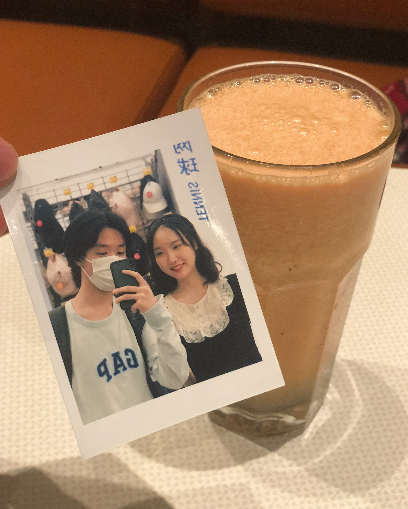

22-7-19
2021年的最后一天，我送了她一束鲜艳的菊花作为上次吵架的赔礼。花店坐落在千里香小馄饨的旁边，只占据了狭小的空间，我有点担心我送的花会不会一股馄饨味儿。花店老板在寒风中招呼着来往的客人，在门口放着的所有花中，那束菊花是最干净的，我想送她生机勃勃的花，所以我让老板挑了一下，随后交给老板娘包扎。老板娘开玩笑说“惹女孩子生气是应该送点花”，一边用报纸纹理的材料帮我把花打扮了一下。听说那束菊花在她手上活了很久很久，以至于她不止一次问我那花是不是假花。可惜的是，那家花店在疫情中关门了。
收到花后的她一如既往的开心，这让我松了一口气，好像上次什么都没发生一样。在去LCM的路上，我让她把手放在我的大衣口袋里，她很听话地照做了，虽然姿势是有一些别扭。我们没有和以往一样在大众点评上苦苦寻找餐厅，而是直奔我们最常去的Wagas。因为我想起上一次和她在虹口玩的时候，“去哪儿吃饭”这件事耗费了她大量的耐心，最终导致我们两个之间发生不愉快。于是这次我选择了最保险的策略。
等我们点完餐坐定之后，她从包里掏出一张打印的小照片，照片上是我们第一次拍的合照。我把照片翻过来，惊喜地发现上面还有她写的一段话："If I could press my heart to your heart, I will keep silent and not say a word."据说是马克思写给燕妮的情话。在之后的很长一段时间，这张小照片都夹在我的手机壳里，为此我甚至还买了一个透明手机壳，放弃了我陪伴了我两年的壳子。当我在学校时，我会把合照那面展现给大家看，当我回家后，我就害羞地把有字的那面翻出来。在考试周的时候复习累了就瞅两眼这张照片，给了我莫大的动力。遗憾的是，若干个月后，我把这张照片落在了LCM的某层楼。我很珍爱这张照片，我很想再要一张一模一样的，但我一直不敢和她说。直到最近我们闹分手，我才舍得把这件事告诉她。
商场里很暖和，我们的心情都很好，她很开心地在和我讲一些学校里的事情。不得不承认她给我涂美甲的样子特别可爱，尤其是她拿起我的手端详的时候。当她打算给我涂指甲油的时候，她的眼睛会眯成一条缝，然后抓起我的手，用一种命令却很挑逗的语气说“给我涂涂”，涂完会长长地“嗯”一下，然后说我的手不好看。换别人这么说我肯定要生气，可是我早已被她的可爱所困住。我的手很敏感，当她摆弄我的手的时候我会陷入一种无法自拔的状态。她把所有她好奇的颜色都涂在了我的指甲上，最后告诉我墨绿色的指甲很适合我，我当时差点就要买下那瓶指甲油，幸好我还是恢复了理智。
我们决定去黄浦江边跨年。相比夏天，冬天的滨江真是门可罗雀。我们只是在漫无目的地散步，等待12点钟声敲响。我和她说我已经准备好了跨年朋友圈的文案，她夸我好可爱。我说有一张长图是包括你的，她说喔真不错。相比于直接拍摄她，我更喜欢拍我们俩一起看到的景色——因为大部分时候我不敢看她，只能看看四周有什么。不管是坐下来聊天也好，还是赶路的时候也好，我都会把目光放在环境上。所以当我想回顾我们的某一次约会的时候，只需要看看那天拍的风景照，约会的细节自然就会浮现在脑海。我想这就是巴甫洛夫条件反射中的强化吧。
我们俩紧张地盯着手机上的时间。等到0的数字出现，我们俩谁都没有说话，过了几秒她小声地说了一句“新年快乐～”。我把她搂在怀里：“新年快乐，我好喜欢你呀～”我们抱了好久好久，旁边有人经过她也不感到害羞，换做以前她肯定要装作我们俩不认识。远处的亭子格外耀眼，我们则躲在暗处。刺骨的寒风不时袭来，不知道这漫长的冬天还有多久过去，不过这并不妨碍我们在广场上又吻了很久很久。这一次她吻得格外用心，好像在用全身的感情。每次接吻后的她都会看起来很虚弱，腿软一般站不稳。我很喜欢她，我想和她一直接吻直到天亮，可惜时间并不允许。
在打车的路上，我们看到“不忘初心，牢记使命”的横幅，正好被巡逻警车的闪烁灯光照着，她看起来很激动。她是一个很有仪式感的人，所以她觉得这是一个好兆头。我愉快地拍下了此景，属于我们的2022年正式拉开序幕
道歉专用菊花
她送我合照诶

无情的试美甲机器1

无情的试美甲机器2
夜色中的橘红色的广场

滨江大house，羡慕，想住
“不忘初心”
评论区